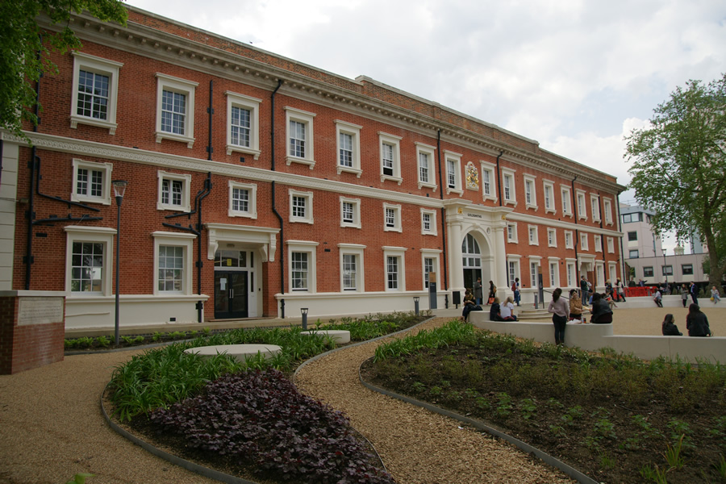
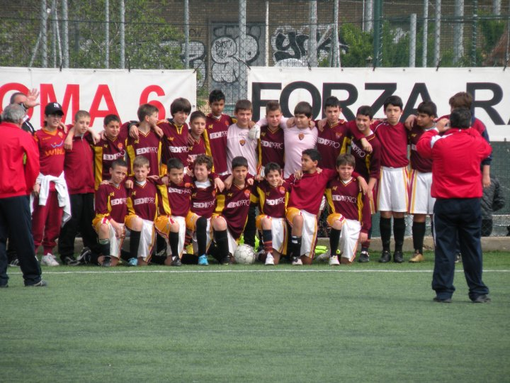

Biography
Introduction
Faiyaz Farhan Uddin is currently an undergraduate student of Computer Science at “Goldsmith University of London”. Faiyaz was born in 1997 (12 th August) in Rome, Italy. He was born from Bengali parents who went to Italy for work purposes. He spent 18 years in Italy before moving to London where he intended to proceed with his higher education. However, before going to university he spent an year doing an Access course on “It and product design" which had been useful to get used to British education.
Goldsmiths University

Sports in early age
At his early ages Faiyaz excelled in sports especially in Football and by the age of 10 he was able to get in one of the most ancient football team of Rome “ Sport society of Pro Roma" (founded in 1911) where he played right field. Beside football Faiyaz enjoyed playing volleyball in his school teams granting his team many victories at school championships. Today Faiyaz still practices football but only as a hobby.
Pro Roma Team (2007/2008)

Interest in computer
Sports was not the only focus Faiyaz had. By the age of 12 he started discovering the world of the computer. Before going in higher secondary school he enjoyed teaching himself with basic coding languages and programming. This is the reason that led him to choose computer science, electronics and web design as his majors at higher secondary school in Italy which gave him a solid foundation to undertake a Computer Science course.
Computer programming